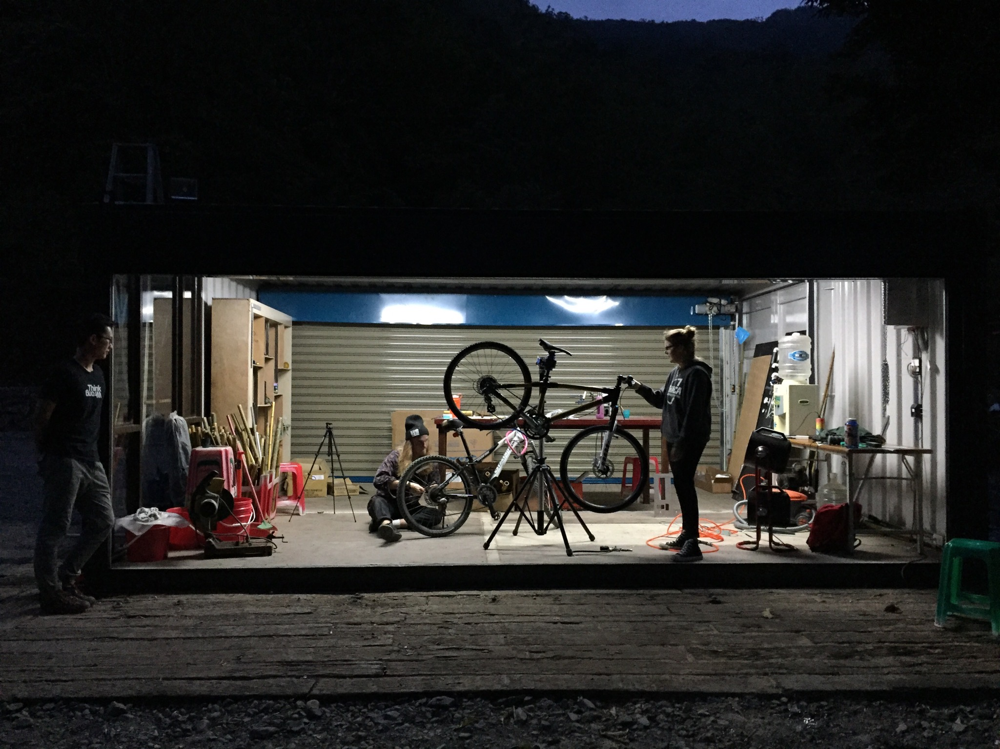

Created a freelancing practice called Collaboratorium that implements emerging technologies for clients including IDEO, Audi Air, Future Partners, Workshop Cafe, Academy of Science, Workday, and Palace Games.
Selected Work
| IDEO |
Future Partners |
|
|
| I fabricated, coded, and built prototypes to showcase the work completed by IDEO Colab for their annual blueprint event. |
Contracted by Future Partners to support the facilitation of a three-day workshop on the future of energy production and consumption in the United States. |
| Audi Air |
Workshop Cafe |
|
|
| Offered research-based insights on the future of AI as a facilitator between dealership staff and customers. |
Built a hardware and software feedback system to facilitate better communication between cafe staff and customers seated at their work stations. |
| Workday |
Palace Games |
|
| |
| Ran several workshops over two years focused on creating prototypes to increase service offerings to university clients. |
Consulted on hardware development for the The Great Houdini Escape Room at Palace Games in San Francisco. Scoped and built prototypes for synchronizing multiple electronic puzzles as part of a complex interactive experience. |
Labs
| CCA Hybrid Lab |
Off the Grid |
|
|  |
| At California College of the Arts, while in college, I managed an electronics and soft materials lab which focused on providing students at CCA with they tools they needed to become proficient in prototyping with electronics and soft materials through tutoring and workshops. |
As part of an energy sustainability project for the Thinking Wrong Institute in Taiwan, I built a small electronics labs to support the building of equipment for monitoring of energy consumption for the sustainability project.
|
| Maker Media |
Think Wrong Lab |
|
| |
| At Maker Media I worked with the shop manager to build out an electronic prototyping lab as part of the Maker Media shops. |
As part of an on going partnership between Kansas University and the Think Wrong Institute, I have been constructing a new lab facility at Kansas University to create a platform for individuals to take concepts from Thinking Wrong workshops and make then into a reality. |
| Private lab for Private Client |
FJORD Make Shop |
|
| |
| Built out a maker space for a client and configured client residence into a smart home.
|
At FJORD I currently I am working on creating a VR optimized prototyping space for the purpose of exploring emerging technologies while reducing material waste in the design process. |